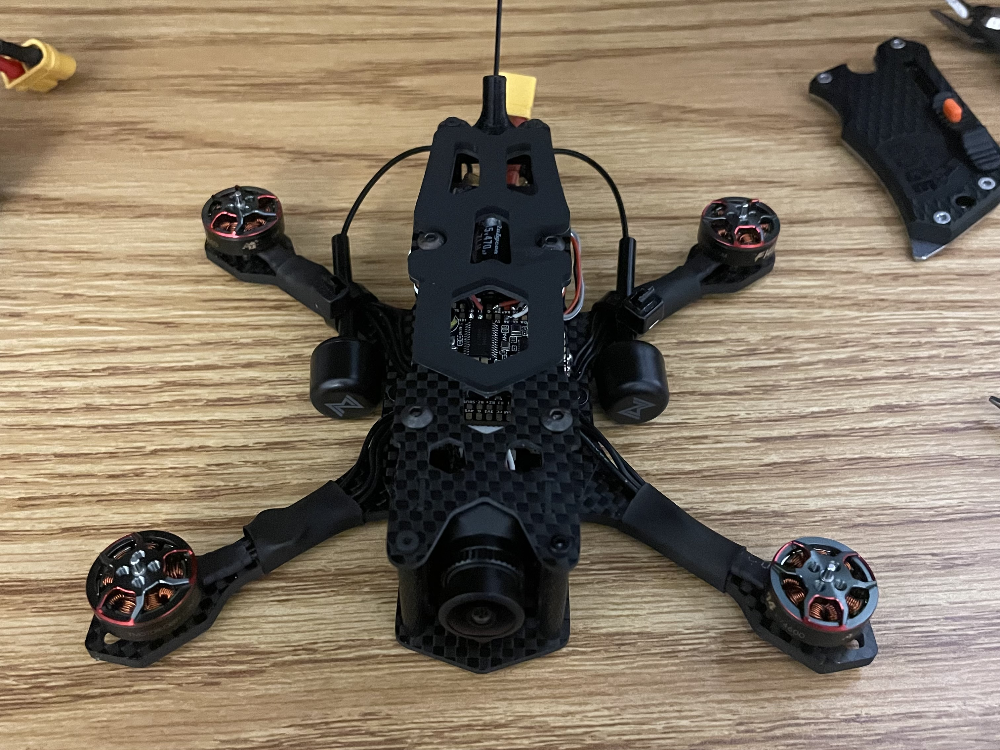
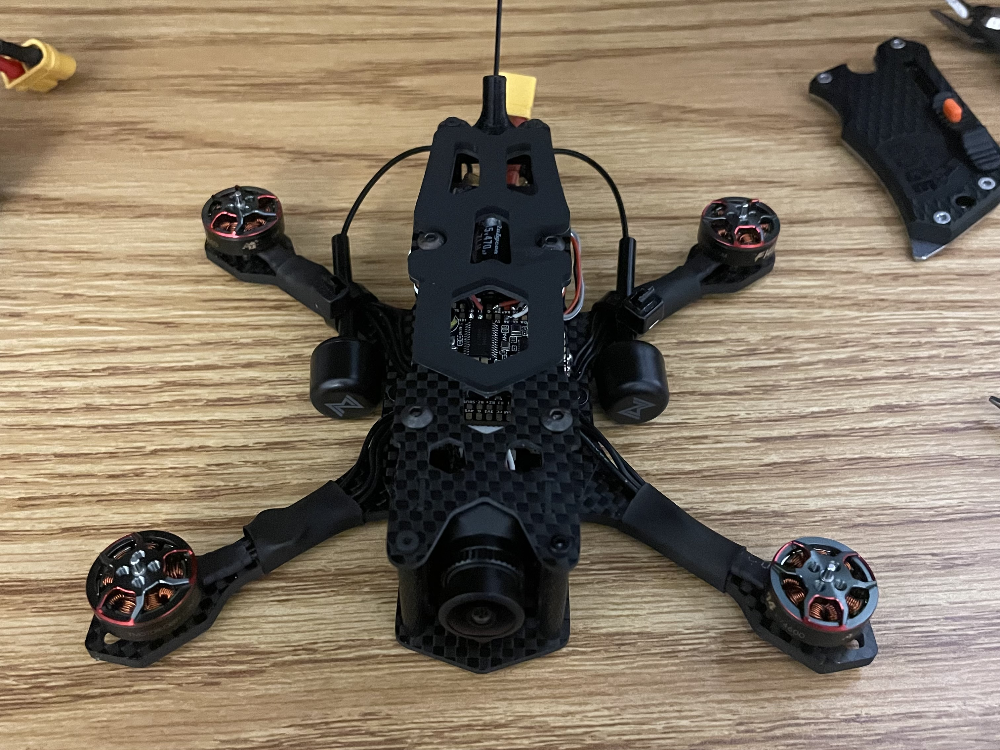

FPV Drones
First person view drones constructed from off the shelf parts to learn about electronics
Status: 2 drones complete
These drones were constructed with the goal of learning about electronics, flight vehicle integration, and remote piloting. They are primarly constructed from off the shelf parts, and programmed wtih betaflight software. They are both controlled using ELRS and use the Walksnail video system to transmit a live video feed to the pilot's goggles.
3in Class Drone
My first drone, designed around a 250g weight limit. This drone is focused on maneuverability and durability, and is mainly used for acrobatic flying.
Components: 1x 3" carbon fiber frame, 1x F405 flight controller, 1x 35A ESC board, 1x 4S LiPo battery, 1x camera and video transmitter, 4x 1404 4600KV motors, 4x 3" triblade propellers, various custom 3D printed add ons
Cover. Completed drone
1. Partially assembled drone, motor wires soldered to ESC board
2. Assembled drone, side view
3. Assembled drone, front view
4. Example frame of in flight view
5. Example flight video

 

75mm Class Drone
My second drone, designed around minimizing weight and size. While maintaining most of the capabilities of a larger drone, it is safe to fly indoors and around people.
Components: 1x 75mm frame, 1x flight controller and ESC board, 1x 1S LiPo battery, 1x camera and video transmitter, 4x 1002 23500KV motors, 4x 40mm biblade or triblade propellers
1. Completed drone
2. Video transmitter, camera, and canopy assembly
3. Integrated flight controller board, top
4. Integrated flight controller board, bottom
5. Example frame of in flight view
6. Example flight video